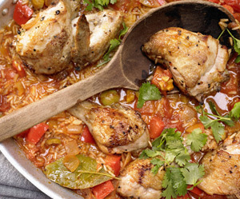

Geschmorter Reis mit Hähnchen auf spanische Art
Eine Paprika vierteln, entkernen und waschen, Zwei Zwiebeln schälen. Beides in etwa 1 cm große Würfel schneiden. 2 Knoblauchzehen schälen und fein hacken.
Ein Hähnchen abspülen, trockentupfen und mit einem großen Messer in 8 Teile schneiden.
Öl in einem Bräter erhitzen. Hähnchenteile mit Salz und Pfeffer würzen, portionsweise im heißen Fett rundherum goldbraun anbraten, herausnehmen und auf einen Teller legen.
Bratfett bis auf etwa 1 EL aus dem Bräter gießen. Paprikaschote, Zwiebeln und Knoblauch im verbliebenen Fett bei mittlerer Hitze 2-3 Minuten andünsten, salzen und pfeffern.
2 EL Paprikapulver und 200 g Vollkornreis dazugeben und unter Rühren kurz andünsten, 2 Dl Weißwein dazugießen (ablöschen) und alles 2 Minuten kochen lassen.
Eine Büchse Pelatti ihrem Saft, 5 DL Gemüsebrühe und ein Lorbeerblatt zum Reis geben, einmal aufkochen lassen. Hähnchenteile dazugeben und alles nochmals kurz aufkochen. Den Bräter mit Alufolie oder einem passenden Deckel verschließen und im vorgeheizten Backofen bei 180 Grad auf der untersten Schiene 50-60 Minuten garen.
Inzwischen die Oliven grob hacken. Koriander oder Petersilie waschen, trockenschütteln, die Blätter abzupfen und hacken.
Am Ende der Garzeit einige Oliven unter den Reis mischen, mit Salz und Pfeffer würzen, mit Petersilie bestreuen und noch etwa 5 Minuten im ausgeschalteten Ofen ziehen lassen.
